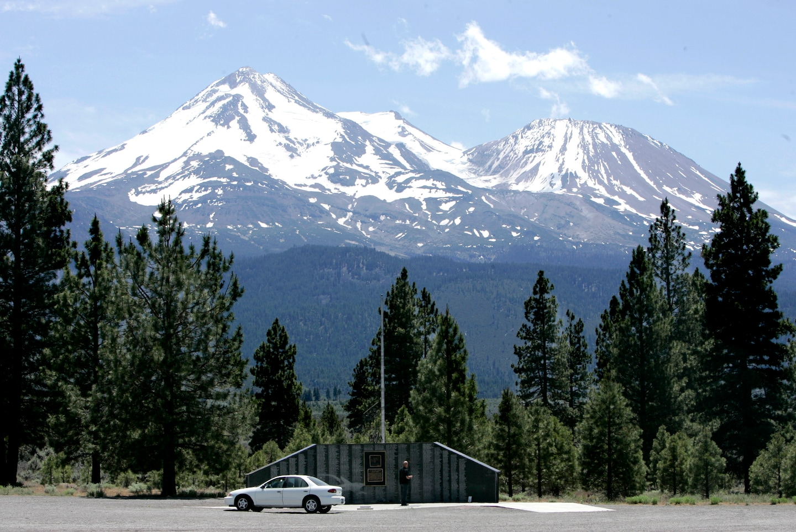
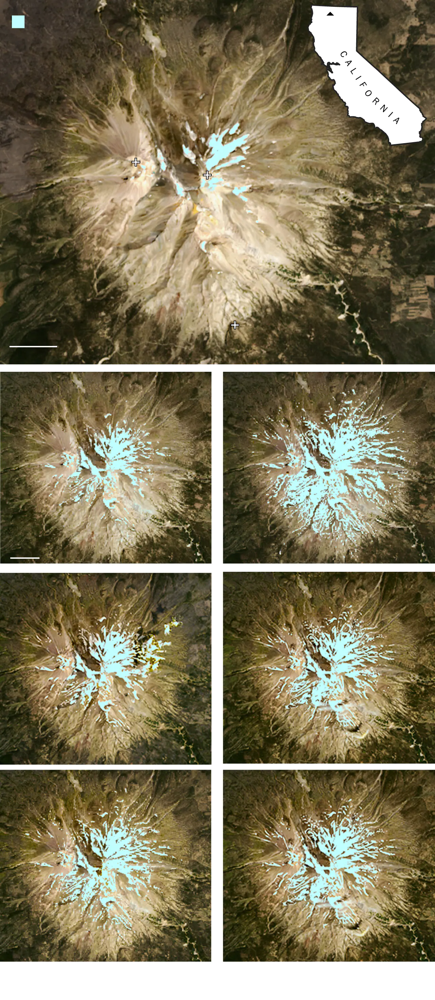
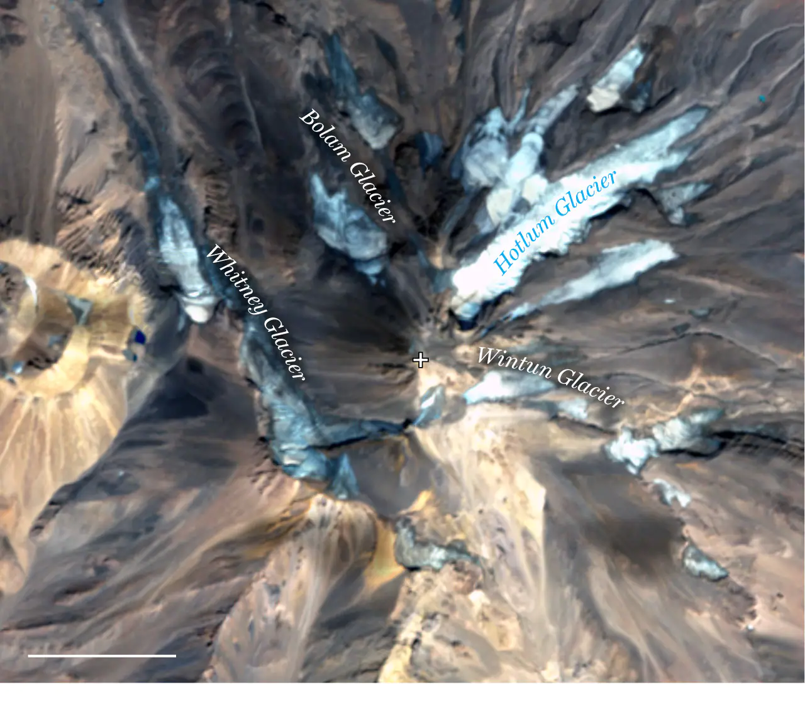
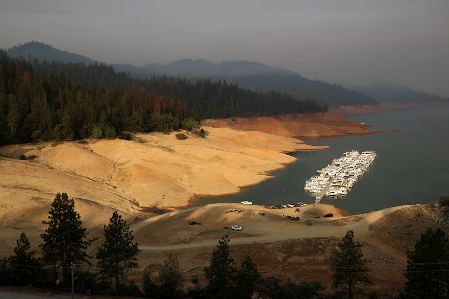

Mount Shasta is nearly snowless, a rare event that is helping melt the mountain’s glaciers
Shasta’s glaciers have lost more than 50 percent of their volume and area in the 21st century, with 2021 as the largest year of volume loss

Mount Shasta is seen covered in snow on June 19, 2008. This year, Shasta experienced extreme melting and appeared bare by midsummer. (Rich Pedroncelli/AP)
By Ian Livingston, Kasha Patel and Hanna Dormido
September 15, 2021 at 9:21 a.m. EDT
Deep in the northern California wilderness, nestled among rolling hills and magnificent pines, the Mount Shasta volcano towers above the landscape as a lone sentinel beckoning to those around it. Rising to 14,179 feet, Shasta is one of the tallest mountains in the Lower 48.
Given its height, snow cover is common year-round, especially after a snowy season or two.It is home to some of the largest glaciers in California and includes at least seven glaciers, some named after Native Americans in the 1800s. This year is testing the theory that snow and ice will always befound on Shasta.
“Mt. Shasta has snow on the summit year-round. This summer is different,” wrote Mt. Shasta Ski Park in late August. “The glaciers that are visible from the north side of the mountain are melting VERY quickly this year.”
Perhaps more unusual, the mountain began losing a lot of snow cover by midsummer. In the past when Shasta tends to turn bare, it’s usually toward the end of summer or even into fall. This year, the mountain became mainly brown in July and August.
The satellite image below shows the snow cover on Mount Shasta and Shastina, a secondary vent of the volcano, on Aug. 19. The image is compared to summer months of previous years, either in July or August depending on the availability of cloud-free scenes.

Note: 2015, 2018 and 2020 images captured in July. 2016, 2017, 2019 and 2021 captured inAugust. Source: Landsat 8 via USGS
The rapid melt occurred during an abnormally hot summer and extreme drought, punctuated by intense heat waves. In June, the Pacific Northwest observed its most severe heat wave on record. Warm temperatures persisted throughout the summer, as many Western states,including California, experienced their warmest summer on record.
In town, about five miles southwest of the mountain, and around 3,500 feet, the Shasta climate location has seen 16 daily record highs this warm season, including two days at 103 degrees, which is just shy of the record of 105 at the location. Both June and July recorded their hottest day time temperatures on record with those 103s.
The heat was also exceptional at higher elevations. At a weather station located around 7,600 feet on Shasta, the average temperature for the past 70 days was around 62 degrees. Temperatures there reached between 77 to 84 degrees at the end of June, leading to rapid melt.
“[You’re] losing a lot more volume because you stripped your snow off by mid-July on Shasta" said Mauri Pelto, a glaciologist at Nichols College in Dudley, Mass. “Imagine how fast it was melting for two months instead of maybe a few days at the end of September.”
Glaciers on Shasta experienced significant melting. The Whitney Glacier, the longest glacier in California, lost 15 to 20 percent of its volume this year so far and is even separating into two glaciers. The Hotlum Glacier also broke into smaller fragments.
The satellite image below shows the various fragments on Shasta as of Sept. 6, although some pieces formed in prior seasons. Pelto said between those 17 fragments, about 2.6 square kilometers of glacier ice is left on the mountain. In the early ’80s, the glacier ice covered around 5.6 square kilometers.

Source: Sentinel imagery via Mauri Pelto, Nichols College
“It is clear that the Whitney Glacier and glaciers as a whole on Mount Shasta have lost more than 50 percent of their volume and area this 21st century,” said Pelto, who published a model to forecast alpine glacier survival. “The loss is accelerating and 2021 will be the single biggest volume loss year.”
And it may get worse as temperatures continue to rise, according to a model he published several years ago to forecast alpine glacier survival. He said a glacier cannot survive if it experiences significant thinning in its upper region, where accumulation is supposed to build up.
“All of Mount Shasta’s glaciers exhibit significant thinning from top to bottom indicating these glaciers cannot survive current climate,” Pelto said.
Just flew past Mt. Shasta and it is so bare is is practically unrecognizable. pic.twitter.com/bfTw8nVqMc
The lack of insulating snow also means the glaciers are facing daily onslaughts of powerful summer rays. Glacial meltwater has caused problems downstream in addition to the concerns on the mountain. As glaciers melt, small ponds often form, created by debris dams. When those dams give way, a huge rush of water and other assorted detritus come careening down the mountain in a deafening roar.
“A number of forest roads have been completely taken out and are impassable by vehicles,”Nick Meyers, the lead climbing ranger on Shasta, told KDRV.com. “I’ve worked here 20 years. My mother-in-law has grown up here her whole life and she said she's never seen it this bare”
These downstream effects could extend beyond the summer, too. The glacial melt exposed unstable sediment buried underneath the glacier, which could remobilize during a heavy rain event in the fall or another large melt event next summer. Pelto is assessing Shasta’s glaciers’ current state and extent for the U.S. Forest Service to help it determine the future glacier runoff supply and potential risk of debris flow.
There are also concerns about less water flowing from Mount Shasta overall, given its importance to water availability in the region.

Low water levels are visible at Shasta Lake on July 2 in Redding, Calif. (Justin SullivanGetty Images)
Shasta Lake is the biggest reservoir in California, just one of many suffering from extremely low water levels of late. As of Sept. 13, it was at 25 percent of capacity and dropping. In recent days and weeks that level has been declining by as much as a half-foot a day.
Shasta isn’t the only glacial mountain in the region that fell victim to the hot, dry conditions this summer.
Mount Baker, an important water source in Washington state for hydropower facilities and salmon hatcheries, experienced at least 17 days since June 1 when temperatures exceeded 80 degrees. Between 4 and 6 inches of snowpack melted on the mountain’s
Easton Glacier during these exceptionally warm days. As of Aug. 11, the glacier had 38 percent snow cover. By the end of the season, the glacier is expected to have the lowest percentage of snow cover since monitoring began in 1990.
The Adams Glacier, located on the northern side of Washington’s MountAdams, lost around 50 percent of 2021 snow cover from June 21 to Aug. 15.
“We’re just seeing these intense heat waves strike one glaciated area over another, and the glaciers aren’t really compatible with that,” Pelto said. “What we saw in June was conditions that broke any previous threshold for temperature, but also for melt. And therecovery from that for glaciers is going to be long term or not at all.”
By Ian Livingston
Ian Livingston is a forecaster/photographer and information lead for the Capital Weather Gang. By day, Ian is a defense and national security researcher at a D.C. think tank.
By Kasha Patel
Kasha Patel edits and reports on the weather, climate and environment for the Capital Weather Gang at The Washington Post. Before joining The Post, she covered Earth sciences and satellite research for NASA.
By Hannah Faith Dormido
Hannah Dormido is a graphics reporter and cartographer at The Washington Post.
 By Ian Livingston
By Ian Livingston
 By Kasha Patel
By Kasha Patel
 By Hannah Faith Dormido
By Hannah Faith Dormido